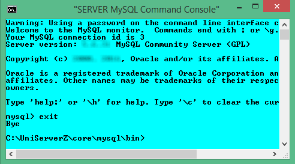

|
|
MySQL Console |
The MySQL client is a very popular admin tool. Uniform Server provides a dedicated menu button that directly runs this utility in a console window. The console window displays mysql> where you type MySQL commands; this combination is commonly referred to as the MySQL prompt. From this window, the MySQL server can be administered.
This page focuses on using the MySQL client. It is not intended as a definitive guide, but just an introduction to show you how to access and use it.
MySQL Console - background information
The following shows how to run the MySQL client in a standard command window from a fixed and portable installation.
Fixed installation:
After installing the MySQL server, its environment is set up allowing you to run the MySQL client directly from a command prompt. To start the MySQL client, proceed as follows:
- Start the mysql server - MySQL server must be running.
- Press the Windows + R keys - Opens the run menu.
- Type cmd and click OK - Opens a standard command window.
- Type mysql.exe {parameters} - Runs the MySQL client and displays the mysql prompt.
Note 1: The {parameters} are:
-h127.0.0.1 -uroot -proot
or
--host=127.0.0.1 --port=3306 --user=root --password=root
Note 2: If you have changed the MySQL root password, remember to substitute -proot or --password=root with your password in the above.
Portable installation:
The MySQL server environment is not configured for a standard command window; an additional command is required to run the MySQL client. To start the MySQL client, proceed as follows:
- Start the mysql server - MySQL server must be running.
- Press the Windows + R keys - Opens the run menu.
- Type cmd and click OK - Opens a standard command window.
- Type cd {path to mysql.exe} - Where {path to mysql.exe} is full path to mysql.exe, for example C:\UniServerZ\core\mysql\bin
- Type mysql.exe {parameters} - Runs the MySQL client and displays the mysql prompt.
Note 1: The {parameters} are:
-h127.0.0.1 -uroot -proot
or
--host=127.0.0.1 --port=3306 --user=root --password=root
Note 2: If you have changed the MySQL root password, remember to substitute -proot or --password=root with your password in the above.
Running the MySQL client requires a number of steps; you can reduce these by running the Server Console and entering the line:
mysql.exe--host=127.0.0.1 --port=3306 --user=root --password=root
However, this again requires additional work. The next section introduces MySQL Console, which removes the above tedium.
MySQL Console - MySQL client shortcut
|
Running the MySQL client from UniController has a number of advantages:
Run MySQL Console:
|
 |
A MySQL console window is shown on the right. Note that after entering exit and pressing Enter, you are greeted with Bye and returned to a Server Console window. To re-run a MySQL console, first close this server console window and click the MySQL Console button again.
Basic MySQL commands
The following provides a list of basic mysql commands, along with their descriptions.
Each command starts at a command prompt mysql>. It is shown for reference; you do not type this in.
| Command | Description |
mysql> create database [databasename]; | Create a database on the MySQL server. |
mysql> show databases; | List all databases on the MySQL server. |
mysql> use [db name]; | Switch to a database (selects a database). |
mysql> show tables; | List all tables in a database. |
mysql> describe [table name]; | View database's field formats. |
mysql> drop database [database name]; | Delete a database. |
mysql> drop table [table name]; | Delete a table. |
mysql> SELECT * FROM [table name]; | Show all data in a table. |
mysql> show columns from [table name]; | List the columns and column information for a table. |
Creating MySQL users
Creating a user for MySQL requires you to create a username with a password and assign permissions to different databases as needed.
New user
To create a new user with username 'fred' and password 'us123', proceed as follows:
| Click MySQL Console | - Runs MySQL client. At the prompt, type next three lines. |
CREATE USER 'fred'@'127.0.0.1' IDENTIFIED BY 'us123'; | - Enter SQL command to create user and password. |
FLUSH PRIVILEGES; | - Flush the privileges, which reloads the 'user' table in MySQL. |
exit; | - Exit MySQL client. |
At this stage, our new user fred is lacking permission and can't do anything, not even log onto the server. See next section for details.
MySQL user permissions
Generally, the database of a web application is assigned to one specific user. There would be no need to have this user access any other database.
You can assign a user to an existing database or create a new one. In this example, we create a new database 'wordpress' and allow 'fred' to have full access to it. He will be able to create, read, update and delete records as needed.
New database assign user
To create a new database and assign user 'fred', proceed as follows:
| Click MySQL Console | - Runs MySQL client. At the prompt, type next four lines. |
CREATE DATABASE wordpress; | - Enter SQL command to create new database. |
GRANT ALL PRIVILEGES ON wordpress.* TO 'fred'@'127.0.0.1'; | - Grant privileges. |
FLUSH PRIVILEGES; | - Flush the privileges, which reloads the 'user' table in MySQL. |
exit; | - Exit MySQL client. |
The above grants all permissions to your new user. If you wish to refine permissions granted, see next section for details.
Permissions overview
You can grant all permissions to a user for a specific database as above, or grant only a limited set of permission as covered in this section.
Using the root user account, a database structure is created. You assign restrictions to this database for a specific user, either allowing full permissions or tailor restrictions to data and/or table manipulation.
Data Manipulation
The most common use for a database is data manipulation, requiring the following minimum permissions:
| SELECT | - read only |
| INSERT | - insert rows/data |
| UPDATE | - change inserted rows/data |
| DELETE | - drop rows of data |
To assign individual permissions, proceed as follows:
| Click MySQL Console | - Runs MySQL client. Note: logs into MySQL as the root user. |
GRANT SELECT, INSERT, UPDATE ON wordpress.* TO 'fred'@'127.0.0.1'; | - Enter SQL command to assign SELECT, INSERT and UPDATE on database 'wordpress' to user 'fred'. |
FLUSH PRIVILEGES; | - Flush the privileges, which reloads the 'user' table in MySQL. |
exit; | - Exit MySQL client. |
User fred can now select, insert and update records. However, fred does not have permission to delete records or adjust the structure of the database.
Table manipulation
Generally, most users do not require access to allow database structure alterations. However, if they are designing databases, permissions to edit tables and database structure are required. Following are the permissions required:
| CREATE | - create new tables |
| ALTER | - change table/column names |
| DROP | - drop columns/tables |
To assign individual permissions, proceed as follows:
| Click MySQL Console | - Runs MySQL client. Note: logs into MySQL as the root user. |
GRANT CREATE, DROP, ALTER ON wordpress.* TO 'fred'@'127.0.0.1'; | - Enter SQL command to assign CREATE, DROP and ALTER on database 'wordpress' to user 'fred'. |
FLUSH PRIVILEGES; | - Flush the privileges, which reloads the 'user' table in MySQL. |
exit; | - Exit MySQL client. |
User fred is now allowed to create, drop and alter tables on the 'wordpress' database.
Related topics
Set New MySQL root user password using MySQL Console
Create Restricted MySQL User using MySQL Console
Delete Restricted MySQL User using MySQL Console
Edit Restricted MySQL User using MySQL Console